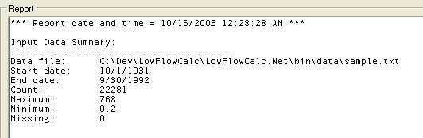
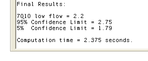

Viewing Results from the Low Flow Calculator™
Once your data file is loaded into Low Flow Calculator™, you can compute the nQm low (or high) streamflow value by clicking the "Compute 7Q10" button on the tool bar. Note that if you are computing 5Q3, the button will indicate this in its tool tip text.
The "Report" text area on the main form shows a summary of the input data including the number of observations, start year and end year, maximum and minimum values, and number of missing points as shown in the following figure:

Following the input data summary is intermediate output from the computation including the annual low flow averages for the given averaging period.
Finally the computation results are displayed area as shown below:

Results of the analysis shown in the above figure include an estimate of the 7Q10 low streamflow value with 5% and 95% confidence limits. The confidence limits give you a feel for the robustness of the 7Q10 estimate. The tighter the confidence limits, the more confidence you can have in the 7Q10 estimate. Factors that increase the confidence bounds include: using a small number of years of data and using data that fluctuates dramatically year to year.